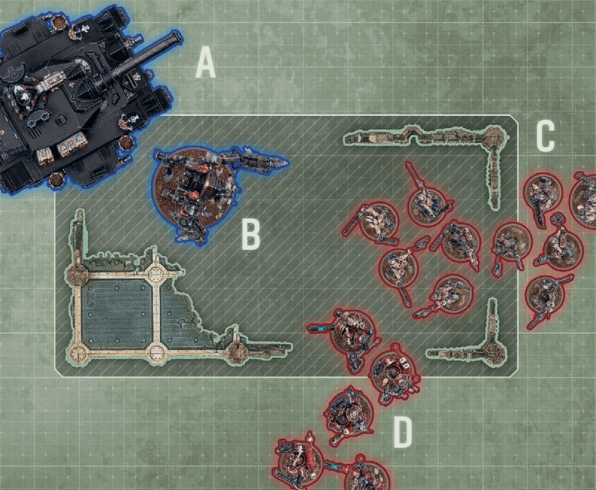

Terrain Objectives
Digital 11EIf a mission uses objectives, it will state where they are located on the battlefield. Typically, your mission will have a deployment map showing several points where objectives should be placed. The location of each point should coincide with a terrain area (); that terrain area is the objective, and is called a terrain objective.
When to and from an objective, measure to and from the closest part of it.


Objectives Not Within A Terrain Area
If the location point of an objective does not coincide with a terrain area, you must denote the location of that objective with a flat, circular marker, 40mm in diameter, centred on that point – this is called anobjective marker. Models can move through objective markers and they can end a move on top of objective markers.
A model is within range of an objective marker while it is within 3" horizontally and 5" vertically of that objective marker. When to and from an objective marker, measure to and from the closest part of it.